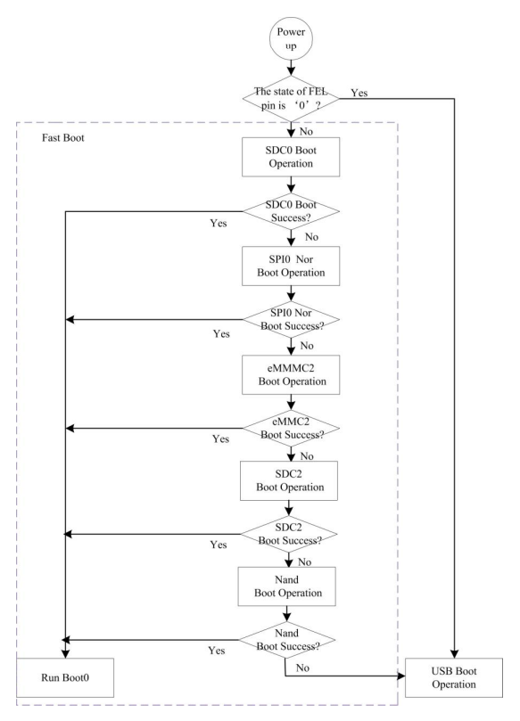
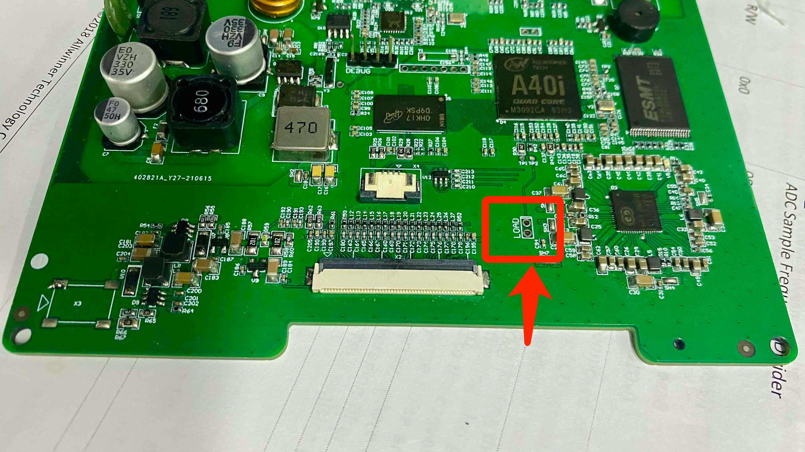
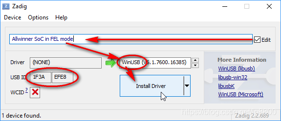
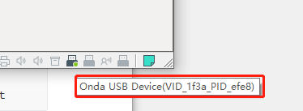

附录
8.1 A40i 芯片的上电启动顺序
A40i芯片支持通过 NAND Flash, eMMC,SPI NOR Flash (SPI0), SD card ,USB 介质启动
After power on, the system will try to boot from SDC0, SPI0, eMMC2, SDC2, NAND Flash and USB successively, but if the Boot Select Pin, an external pin that is used to select system boot method, is checked to be in low level state, the system will direclty boot from USB. In normal state, this pin is pulled up by an internal 50kohm resistor
当A40i芯片上电后，如果检测到FEL引脚为低电平，则芯片直接跳转到USB FEL模式，等待数据通过USB OTG传输；当FEL引脚没有被拉低时，BROM会尝试从SDC0, SPI0, eMMC2, SDC2, NAND Flash，USB读取数据，并且判断读取的数据是否满足为合法启动数据，如果为合法启动数据，则结束引导，将系统控制权转交给bootloader。

参考：
8.2 全志 USB FEL 模式
FEL is a low-level subroutine contained in the BootROM on Allwinner devices. It is used for initial programming and recovery of devices using USB.
全志的FEL模式是烧录固件和解决设备启动问题的一种特殊模式。FEL是烧录工具PhoenixSuit使用的一种协议，完整名称为Full-Featured Embedded Loader。 FEL模式可以通过USB接口进入，从而使用烧录工具来烧录或修复设备上的固件。FEL 固化在全志BROM之中的通信协议，用于对全志芯片进行初始化和恢复。此时芯片作为DEVICE设备端，通过USB OTG 和HOST端通过USB FEL协议进行通信
在FEL模式下，设备处于一个低级别状态，其中只有基本驱动程序处于活动状态，以便通过USB接口与计算机通信。通过这种方式，烧录工具可以与设备进行数据交换，并向设备烧录新的固件。FEL模式通常用于修复设备启动问题，例如穿越刷机错误、固件损坏等。在进入FEL模式后，用户可以使用烧录工具执行修复操作以恢复设备正常的操作系统和功能。
总之，全志的FEL模式是一种非常有用的工具，可用于烧录和修复设备的固件，特别是在设备无法正常启动时使用。
在HOST端主要通过sunxi-tools工具集来进行与全志芯片的通信,有读取芯片信息，执行命令，读写内存等功能。
# sunxi-fel --help
sunxi-fel v1.4.1-104-g11a9d20
Usage: sunxi-fel [options] command arguments... [command...]
-h, --help Print this usage summary and exit
-v, --verbose Verbose logging
-p, --progress "write" transfers show a progress bar
-l, --list Enumerate all (USB) FEL devices and exit
-d, --dev bus:devnum Use specific USB bus and device number
--sid SID Select device by SID key (exact match)
spl file Load and execute U-Boot SPL
If file additionally contains a main U-Boot binary
(u-boot-sunxi-with-spl.bin), this command also transfers that
to memory (default address from image), but won't execute it.
uboot file-with-spl like "spl", but actually starts U-Boot
U-Boot execution will take place when the fel utility exits.
This allows combining "uboot" with further "write" commands
(to transfer other files needed for the boot).
hex[dump] address length Dumps memory region in hex
dump address length Binary memory dump
exe[cute] address Call function address
reset64 address RMR request for AArch64 warm boot
memmove dest source size Copy <size> bytes within device memory
readl address Read 32-bit value from device memory
writel address value Write 32-bit value to device memory
read address length file Write memory contents into file
write address file Store file contents into memory
write-with-progress addr file "write" with progress bar
write-with-gauge addr file Output progress for "dialog --gauge"
write-with-xgauge addr file Extended gauge output (updates prompt)
multi[write] # addr file ... "write-with-progress" multiple files,
sharing a common progress status
multi[write]-with-gauge ... like their "write-with-*" counterpart,
multi[write]-with-xgauge ... but following the 'multi' syntax:
<#> addr file [addr file [...]]
echo-gauge "some text" Update prompt/caption for gauge output
ver[sion] Show BROM version
sid Retrieve and output 128-bit SID key
clear address length Clear memory
fill address length value Fill memory
spiflash-info Retrieves basic information
spiflash-read addr length file Write SPI flash contents into file
spiflash-write addr file Store file contents into SPI flash
参考：
8.3 烧录
烧录前将HMI进入烧录模式，具体步骤为短接FEL引脚，然后上电即可进入烧录模式（即USB FEL模式）

在Ubuntu或其他Linux发行版情况下可以通过libusb库直接连接设备。 在Windows上需要Zadig安装WinUSB驱动来实现。

如果是Linux虚拟机，则需要将USB设备挂载到虚拟机下 
在Linux 上输入lsusb可以看到以下提示
➜ ~ lsusb
Bus 001 Device 001: ID 1d6b:0002 Linux Foundation 2.0 root hub
Bus 004 Device 001: ID 1d6b:0003 Linux Foundation 3.0 root hub
Bus 003 Device 001: ID 1d6b:0002 Linux Foundation 2.0 root hub
Bus 002 Device 004: ID 1f3a:efe8 Onda (unverified) V972 tablet in flashing mode
Bus 002 Device 001: ID 1d6b:0001 Linux Foundation 1.1 root hub
1f3a:efe8 即为处于烧录模式的HMI设备
在 Linux 环境下执行以下选项，这样烧录FEL设备不需要 sudo 权限即可运行
sudo touch /etc/udev/rules.d/99-allwinner.rules
echo 'SUBSYSTEM=="usb", ATTRS{idVendor}=="1f3a", ATTRS{idProduct}=="efe8", GROUP="plugdev", MODE="0660" SYMLINK+="usb-chip"
SUBSYSTEM=="usb", ATTRS{idVendor}=="18d1", ATTRS{idProduct}=="1010", GROUP="plugdev", MODE="0660" SYMLINK+="usb-chip-fastboot"
SUBSYSTEM=="usb", ATTRS{idVendor}=="18d1", ATTRS{idProduct}=="4d00", GROUP="plugdev", MODE="0660" SYMLINK+="usb-chip-fastboot"
SUBSYSTEM=="usb", ATTRS{idVendor}=="1f3a", ATTRS{idProduct}=="1010", GROUP="plugdev", MODE="0660" SYMLINK+="usb-chip-fastboot"
SUBSYSTEM=="usb", ATTRS{idVendor}=="067b", ATTRS{idProduct}=="2303", GROUP="plugdev", MODE="0660" SYMLINK+="usb-serial-adapter"' | sudo tee /etc/udev/rules.d/99-allwinner.rules
sudo udevadm control --reload-rules
在Buildroot执行make后，会在output/images目录生成image.zip,解压image.zip 后可以看到该压缩包里面有以下文件
.
├── rootfs.ubi //根文件系统镜像
├── sun8i-a40i-cotrust-g101.dtb //设备树文件
├── sunxi-spl-with-ecc.bin //bootloader spl
├── u-boot-dtb.img //bootloader
├── u-boot-fastboot.bin //带有fastboot 用于烧录的uboot固件
└── zImage //linux kernel文件
如果要烧录固件，可以执行以下命令
sudo sunxi-fel uboot u-boot-fastboot.bin;
fastboot flash spl sunxi-spl-with-ecc.bin;
fastboot flash bootloader u-boot-dtb.img;
fastboot flash kernel zImage;
fastboot flash dtb *.dtb;
fastboot flash filesystem rootfs.ubi;
fastboot reboot
分区大小和各分区的作用可以参考第四章 U-Boot 第四节 U-Boot分区
参考链接